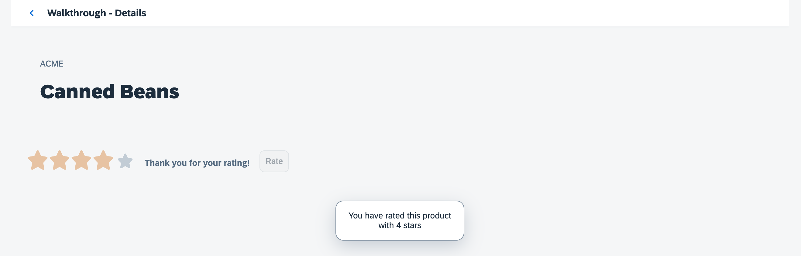

You can view and download all files at Walkthrough - Step 33.
sap.ui.define([
"sap/ui/core/Control"
], (Control) => {
"use strict";
return Control.extend("ui5.walkthrough.control.ProductRating", {
metadata : {},
init() {},
renderer(oRM, oControl) {}
});
});We create a new folder control and a file ProductRating.js that will hold our new control. As with
our controllers and views, the custom control inherits the common control functionality from a OpenUI5 base object, for controls this is done by extending the base class
sap.ui.core.Control.
Custom controls are small reuse components that can be created within the app very easily. Due to their nature, they are sometimes also
referred to as "notepad" or "on the fly" controls. A custom control is a JavaScript object that has two special sections
(metadata and renderer) and a number of methods that implement the functionality of the
control.
The metadata section defines the data structure and thus the API of the control. With this meta information on the
properties, events, and aggregations of the control OpenUI5 automatically
creates setter and getter methods and other convenience functions that can be called within the app.
The renderer defines the HTML structure that will be added to the DOM tree of your app whenever the control is instantiated in a view.
It is usually called initially by the core of OpenUI5 and whenever a
property of the control is changed. The parameter oRM of the render function is the OpenUI5 render manager that can be used to write strings and control
properties to the HTML page.
The init method is a special function that is called by the OpenUI5 core whenever the control is instantiated. It can be used to set
up the control and prepare its content for display.
Controls always extend sap.ui.core.Control and render themselves. You could also extend
sap.ui.core.Element or sap.ui.base.ManagedObject directly if you want to reuse life cycle
features of OpenUI5 including data binding for objects that are not
rendered. Please refer to the API reference to learn more about the inheritance hierarchy of controls.
sap.ui.define([ "sap/ui/core/Control", "sap/m/RatingIndicator", "sap/m/Label", "sap/m/Button" ], (Control, RatingIndicator, Label, Button) => { "use strict"; return Control.extend("ui5.walkthrough.control.ProductRating", { metadata : { properties : { value: {type : "float", defaultValue : 0} }, aggregations : { _rating : {type : "sap.m.RatingIndicator", multiple: false, visibility : "hidden"}, _label : {type : "sap.m.Label", multiple: false, visibility : "hidden"}, _button : {type : "sap.m.Button", multiple: false, visibility : "hidden"} }, events : { change : { parameters : { value : {type : "int"} } } } }, init() { this.setAggregation("_rating", new RatingIndicator({ value: this.getValue(), iconSize: "2rem", visualMode: "Half", liveChange: this._onRate.bind(this) })); this.setAggregation("_label", new Label({ text: "{i18n>productRatingLabelInitial}" }).addStyleClass("sapUiSmallMargin")); this.setAggregation("_button", new Button({ text: "{i18n>productRatingButton}", press: this._onSubmit.bind(this) }).addStyleClass("sapUiTinyMarginTopBottom")); }, setValue(fValue) { this.setProperty("value", fValue, true); this.getAggregation("_rating").setValue(fValue); return this; }, reset() { const oResourceBundle = this.getModel("i18n").getResourceBundle(); this.setValue(0); this.getAggregation("_label").setDesign("Standard"); this.getAggregation("_rating").setEnabled(true); this.getAggregation("_label").setText(oResourceBundle.getText("productRatingLabelInitial")); this.getAggregation("_button").setEnabled(true); }, _onRate(oEvent) { const oRessourceBundle = this.getModel("i18n").getResourceBundle(); const fValue = oEvent.getParameter("value"); this.setProperty("value", fValue, true); this.getAggregation("_label").setText(oRessourceBundle.getText("productRatingLabelIndicator", [fValue, oEvent.getSource().getMaxValue()])); this.getAggregation("_label").setDesign("Bold"); }, _onSubmit(oEvent) { const oResourceBundle = this.getModel("i18n").getResourceBundle(); this.getAggregation("_rating").setEnabled(false); this.getAggregation("_label").setText(oResourceBundle.getText("productRatingLabelFinal")); this.getAggregation("_button").setEnabled(false); this.fireEvent("change", { value: this.getValue() }); }, renderer(oRm, oControl) { oRm.openStart("div", oControl); oRm.class("myAppDemoWTProductRating"); oRm.openEnd(); oRm.renderControl(oControl.getAggregation("_rating")); oRm.renderControl(oControl.getAggregation("_label")); oRm.renderControl(oControl.getAggregation("_button")); oRm.close("div"); } }); });
We now enhance our new custom control with the custom functionality that we need. In our case we want to create an interactive product
rating, so we define a value and use three internal controls that are displayed updated by our control automatically. A
RatingIndicator control is used to collect user input on the product, a label is displaying further information,
and a button submits the rating to the app to store it.
In the metadata section we therefore define several properties that we make use in the implementation:
Properties
Value
We define a control property value that will hold the value that the user selected in the
rating. Getter and setter function for this property will automatically be created and we can also bind it to
a field of the data model in the XML view if we like.
Aggregations
As described in the first paragraph, we need three internal controls to realize our rating functionality. We therefore
create three "hidden aggregations" by setting the visibility attribute to hidden. This
way, we can use the models that are set on the view also in the inner controls and OpenUI5 will take care of the lifecycle management and destroy
the controls when they are not needed anymore. Aggregations can also be used to hold arrays of controls but we just want a
single control in each of the aggregations so we need to adjust the cardinality by setting the attribute
multiple to false.
_rating: A sap.m.RatingIndicator control for user input
_label: A sap.m.Label to display additional information
_button: A sap.m.Button to submit the rating
You can define aggregations and associations
An aggregation is a strong relation that also manages the lifecycle of the related control, for example, when the parent is destroyed, the related control is also destroyed. Also, a control can only be assigned to one single aggregation, if it is assigned to a second aggregation, it is removed from the previous aggregation automatically.
An association is a weak relation that does not manage the lifecycle and can be defined multiple times. To have a clear distinction, an association only stores the ID, whereas an aggregation stores the direct reference to the control. We do not specify associations in this example, as we want to have our internal controls managed by the parent.
Events
Change
We specify a change event that the control will fire when the rating is submitted. It contains
the current value as an event parameter. Applications can register to this event and process the result
similar to "regular" OpenUI5 controls, which are
in fact built similar to custom controls.
In the init function that is called by OpenUI5
automatically whenever a new instance of the control is instantiated, we set up our internal controls. We instantiate the three
controls and store them in the internal aggregation by calling the framework method setAggregation that has been
inherited from sap.ui.core.Control. We pass on the name of the internal aggregations that we specified above and the
new control instances. We specify some control properties to make our custom control look nicer and register a
liveChange event to the rating and a press event to the button. The initial texts for the label and the button
are referenced from our i18n model.
Let's ignore the other internal helper functions and event handlers for now and define our renderer. By using the APIs of the
RenderManager and the control instance that are passed as references, we can describe the necessary HTML for our
control. To open a new HTML tag we use the openStart method and pass "div" as the HTML element to be
created. We also pass our control instance (ProductRating) to be associated with the HTML tag. The RenderManager will
automatically generate the properties for the control and assign it to the div tag. After calling
openStart, we can chain additional methods to set attributes or styles for the element. To set
myAppDemoWTProductRating as our custom CSS class for the div element, we use the
class method. Finally, we close the surrounding div tag by calling openEnd.
Next, we render the three child controls we defined in the aggregation of our ProductRating control. We retrieve the
child controls using the getAggregation method with the aggregation name as parameter. The
renderControl method is then called on each child control to render them. Finally, we close the element by
calling the close method on the RenderManager and passing the "div" element name as
argument. This completes the rendering of the custom control.
The setValue is an overridden setter. OpenUI5 will
generate a setter that updates the property value when called in a controller or defined in the XML view, but we also need to update
the internal rating control in the hidden aggregation to reflect the state properly. Also, we can skip the rerendering of OpenUI5 that is usually triggered when a property is changed on a control
by calling the setProperty method to update the control property with true as the third parameter.
Now we define the event handler for the internal rating control. It is called every time the user changes the rating. The current value
of the rating control can be read from the event parameter value of the sap.m.RatingIndicator control. With the value
we call the setProperty method to update the control state, then we update the label next to the
rating to show the user which value he has selected currently and also displays the maximum value. The string with the placeholder
values is read from the i18n model that is assigned to the control automatically.
Next, we have the press handler for the rating button that submits our rating. We assume that rating a product is a
one-time action and first disable the rating and the button so that the user is not allowed to submit another rating. We also update
the label to show a "Thank you for your rating!" message, then we fire the change event of the control and pass in the current value
as a parameter so that applications that are listening to this event can react on the rating interaction.
We define the reset method to be able to revert the state of the control on the UI to its initial state so that the
user can again submit a rating.
<mvc:View controllerName="ui5.walkthrough.controller.Detail" xmlns="sap.m" xmlns:mvc="sap.ui.core.mvc" xmlns:wt="ui5.walkthrough.control"> <Page title="{i18n>detailPageTitle}" showNavButton="true" navButtonPress=".onNavBack"> <ObjectHeader intro="{invoice>ShipperName}" title="{invoice>ProductName}"/> <wt:ProductRating id="rating" class="sapUiSmallMarginBeginEnd" change=".onRatingChange"/> </Page> </mvc:View>
A new namespace wt is defined on the detail view so that we can
reference our custom controls easily in the view. We then add an instance of the
ProductRating control to our detail page and register an event
handler for the change event. To have a proper layout, we also add a margin style
class.
sap.ui.define([ "sap/ui/core/mvc/Controller", "sap/ui/core/routing/History", "sap/m/MessageToast" ], (Controller, History, MessageToast) => { "use strict"; return Controller.extend("ui5.walkthrough.controller.Detail", { … onObjectMatched(oEvent) { this.byId("rating").reset(); this.getView().bindElement({ path: "/" + window.decodeURIComponent(oEvent.getParameter("arguments").invoicePath), model: "invoice" }); }, onNavBack() { const oHistory = History.getInstance(); const sPreviousHash = oHistory.getPreviousHash(); if (sPreviousHash !== undefined) { window.history.go(-1); } else { const oRouter = this.getOwnerComponent().getRouter(); oRouter.navTo("overview", {}, true); } }, onRatingChange(oEvent) { const fValue = oEvent.getParameter("value"); const oResourceBundle = this.getView().getModel("i18n").getResourceBundle(); MessageToast.show(oResourceBundle.getText("ratingConfirmation", [fValue])); } }); });
In the Detail controller we load the dependency to the
sap.m.MessageToast because we will simply display a message
instead of sending the rating to the backend to keep the example simple. The event
handler onRatingChange reads the value of our custom change event
that is fired when the rating has been submitted. We then display a confirmation
message with the value in a MessageToast control.
In the onObjectMatched method, we call the reset method to make it possible to submit another rating as soon
as the detail view is displayed for a different item.
html[dir="ltr"] .myAppDemoWT .myCustomButton.sapMBtn {
margin-right: 0.125rem
}
html[dir="rtl"] .myAppDemoWT .myCustomButton.sapMBtn {
margin-left: 0.125rem
}
.myAppDemoWT .myCustomText {
display: inline-block;
font-weight: bold;
}
/* ProductRating */
.myAppDemoWTProductRating {
padding: 0.75rem;
}
.myAppDemoWTProductRating .sapMRI {
vertical-align: initial;
}To layout our control, we add a little padding to the root class to have some space around the three inner controls, and we override
the alignment of the RatingIndicator control so that it is aligned in one line with the label and the button.
We could also do this with more HTML in the renderer but this is the simplest way and it will only be applied inside our custom control. However, please be aware that the custom control is in your app and might have to be adjusted when the inner controls change in future versions of OpenUI5.
…
# Detail Page
detailPageTitle=Walkthrough - Details
ratingConfirmation=You have rated this product with {0} stars
# Product Rating
productRatingLabelInitial=Please rate this product
productRatingLabelIndicator=Your rating: {0} out of {1}
productRatingLabelFinal=Thank you for your rating!
productRatingButton=RateThe resource bundle is extended with the confirmation message and the strings that we reference inside the custom control. We can now rate a product on the detail page with our brand new control.
Put custom controls in the control folder of your app.